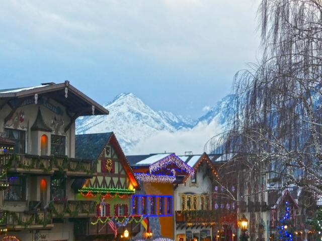
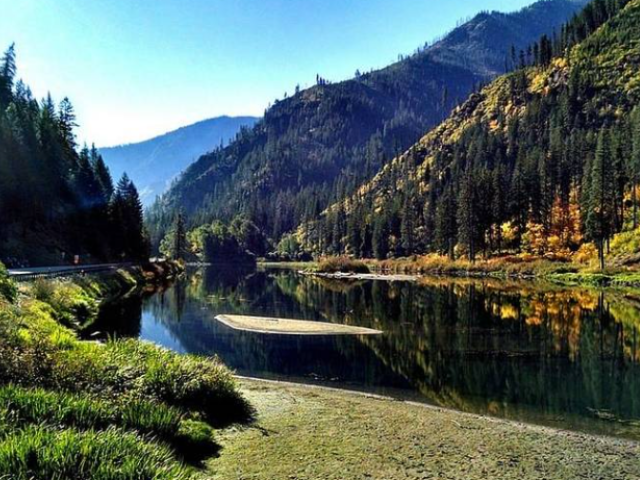
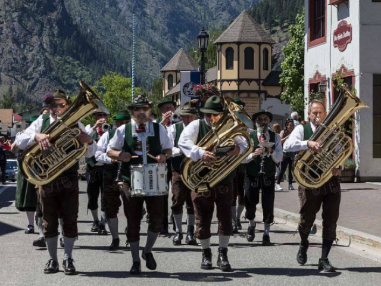
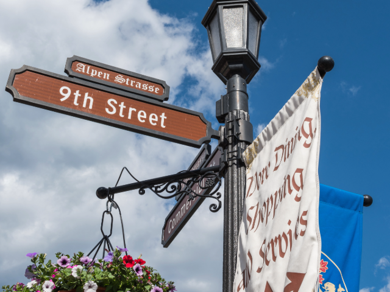
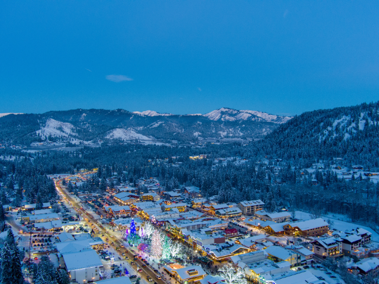
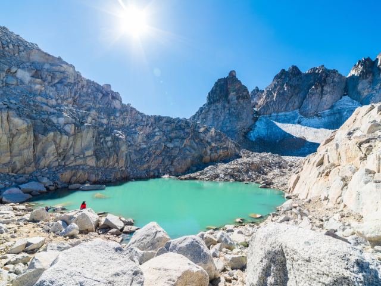
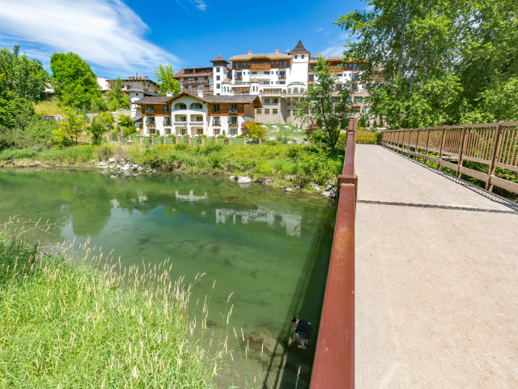
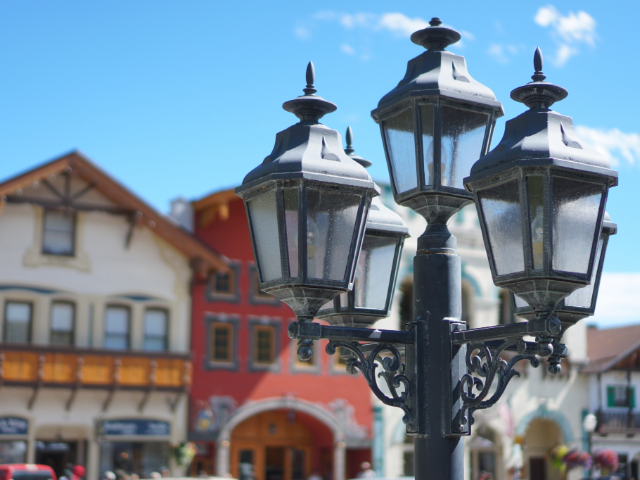
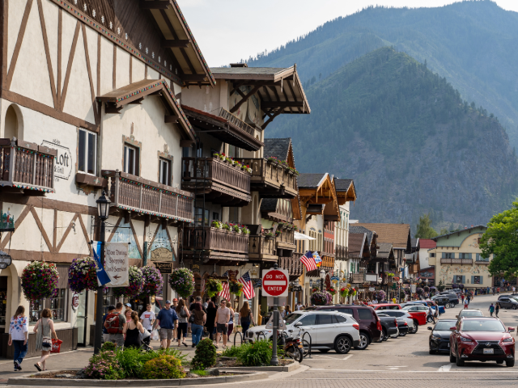
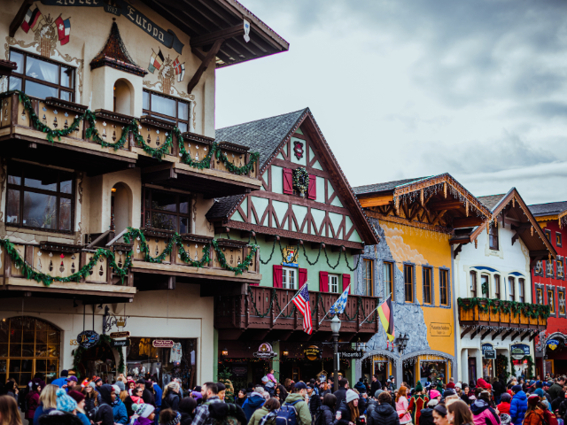

Leavenworth, nestled in the Cascade Mountains of Chelan County, is renowned for its Bavarian-style architecture and festive atmosphere. The city was incorporated on September 5, 1906. As of the 2020 census, Leavenworth has a population of 2,263. Located in central Washington, it is classified as a rural area, attracting tourists year-round for its unique cultural events and outdoor activities. The median household income in Leavenworth is $61,250, which is below the state median.










Upcoming Events in Leavenworth
Experience Bavarian charm in Leavenworth with these festivals and events that celebrate the season.
| Date | Event | Description |
|---|---|---|
| May 11, 2025 | Maifest | Traditional Bavarian celebration with dancing and music. |
| June 21, 2025 | Accordion Celebration | National musicians compete and play throughout the town. |
| September 14, 2025 | Autumn Leaf Festival | Parade and leaf-themed celebration of the changing seasons. |
| October 5, 2025 | Oktoberfest | German food, beer, and dancing across multiple weekends. |
| December 1, 2025 | Christmas Lighting Festival | Iconic downtown holiday light show with caroling and cocoa. |
| February 8, 2026 | Winter Karneval | A snowy twist on Germany’s Fasching celebration. |